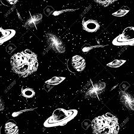

Las galaxias activas son galaxias que liberan grandes cantidades de energía y/o materia al medio interestelar mediante procesos que no están relacionados con los procesos estelares ordinarios. Aproximadamente un 10 % de las galaxias pueden clasificarse como galaxias activas.
La mayor parte de la energía emitida por las galaxias activas proviene de una pequeña y brillante región del núcleo de la galaxia, y en muchos casos se observan líneas espectrales de emisión anchas y/o estrechas, que evidencian la existencia de grandes masas de gas girando alrededor del centro de la galaxia.
Los tipos más importantes de galaxias activas son:
